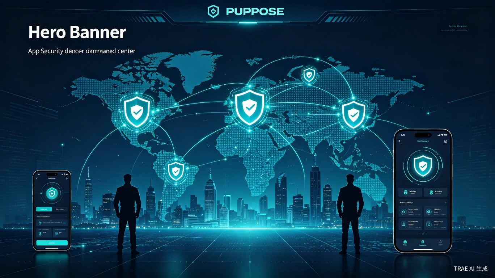
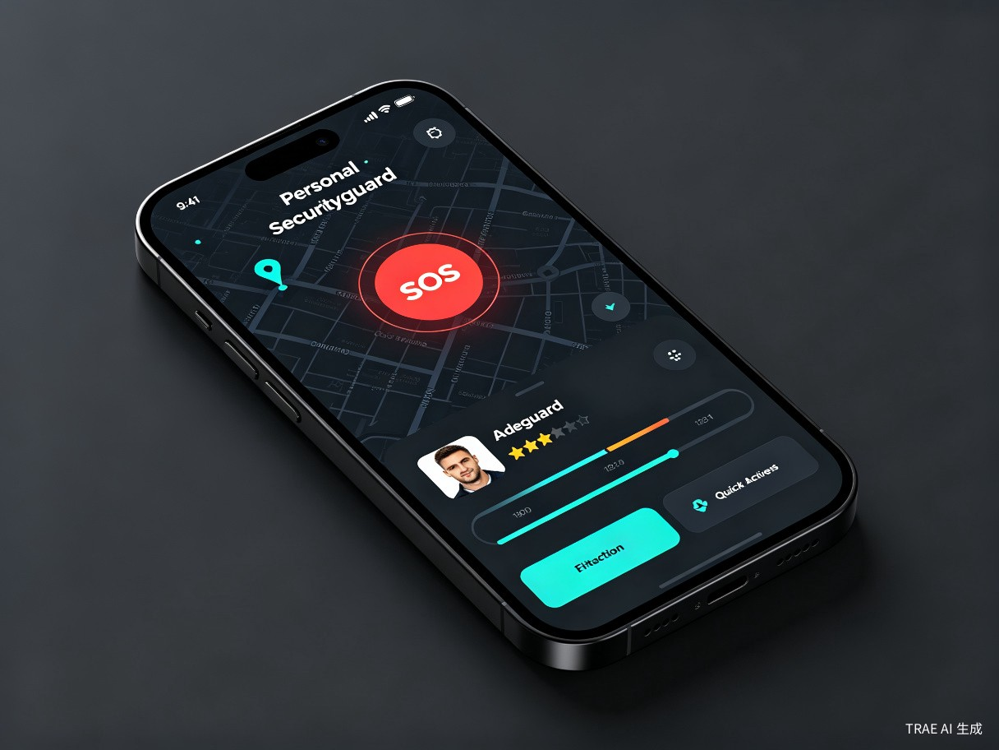

「海外华人安全守护系统」（GuardianX）
全球超过6000万海外华人在异国他乡面临语言障碍、法律差异、文化冲突等多重安全风险，尤其在治安薄弱地区缺乏可信赖的紧急安保响应渠道。现有领事保护资源有限，民间安保服务信息不对称、价格不透明、资质难辨，导致华人在遭遇危险时求助无门。
近年来海外华人安全事件频发——从东南亚绑架案到欧美街头暴力，从劳务纠纷到商业冲突，许多案例本可通过快速响应避免恶化。我们注意到：一方面，大量退伍军人、安保专业人员有服务意愿；另一方面，海外华人社区急需可快速触达、价格透明、资质可验的安全服务。连接供需两端，用技术降低信任成本，正是这个创意的核心动机。
一款集紧急求助、保镖预约、安全咨询、社区联防于一体的综合性App/小程序，配套后台调度管理系统与全球合作安保网络。
在非洲、东南亚、拉美等高风险地区从事商贸、矿产、基建投资的企业主及高管。
初到异国、语言不通、对当地治安环境不熟悉的中国留学生及长期旅居者。
在中东、非洲等地区从事工程、农业、服务业的中国劳务人员。
前往治安不稳定国家或地区的自由行游客、商务考察团。
| 痛点 | 具体表现 |
|---|---|
| 求助渠道缺失 | 当地报警电话语言不通，中国领事馆响应流程长，民间安保公司难寻 |
| 信息不对称 | 无法判断当地哪些安保公司可靠、价格是否合理、人员是否专业 |
| 响应速度慢 | 传统安保服务预约流程繁琐，紧急情况无法快速匹配到可用人员 |
| 信任成本高 | 海外华人社区相对封闭，对非华人安保人员存在戒备，缺乏华人背景的可信安保力量 |
| 事后维权难 | 服务纠纷、费用争议缺乏仲裁机制，跨境维权成本极高 |
海外华人是中华民族的重要组成部分，他们的安全与尊严关乎国家形象与民族情感。本系统通过数字化手段降低安全服务门槛，让普通华人也能获得专业保护，实质上是将"领事保护"延伸到民间层面，形成"官方+民间"的双重保障网络。同时，系统优先吸纳华人退伍军人、武术教练等群体作为安保人员，既解决了他们的就业问题，也增强了服务提供者与用户之间的文化认同和信任基础。
全球私人安保市场规模已超过5000亿美元，且以每年15%的速度增长。海外华人安全服务是一个高度垂直、需求刚性的细分市场。系统采用"平台抽成+会员订阅+保险分成"的多元盈利模式，预计三年内可覆盖东南亚、非洲、中东等核心区域，实现规模化盈利。
传统安保服务从需求发起到人员到位平均需要2-4小时，而通过GuardianX的智能调度系统，结合LBS定位与AI匹配算法，可将响应时间缩短至15分钟以内。平台化的信用评价与资质认证体系，也大幅降低了用户筛选成本。
flowchart TB
subgraph 用户端["用户端 App/小程序"]
A1[一键SOS]
A2[保镖预约]
A3[安全地图]
A4[社区联防]
A5[在线客服]
end
subgraph 平台层["平台调度中心"]
B1[智能匹配引擎]
B2[实时定位系统]
B3[信用评价系统]
B4[支付结算]
B5[多语言客服]
end
subgraph 供应端["安保供应端"]
C1[华人安保团队]
C2[当地合作公司]
C3[退伍军人网络]
C4[医疗救援伙伴]
end
subgraph 支撑层["支撑体系"]
D1[保险公司]
D2[律师事务所]
D3[领事馆对接]
D4[大使馆热线]
end
用户端 --> 平台层
平台层 --> 供应端
平台层 --> 支撑层
| 模块 | 功能描述 | 技术亮点 |
|---|---|---|
| 紧急求助 | 一键触发SOS，自动发送定位与现场录音至最近安保人员与紧急联系人 | 离线模式支持、卫星定位备用 |
| 保镖预约 | 按地区、时间、服务类型筛选并预约持证安保人员 | AI智能匹配、动态定价 |
| 安全地图 | 实时显示周边安全事件、危险区域预警、安全路线规划 | 众包数据+官方数据源融合 |
| 社区联防 | 同城市华人安全群组，共享情报、互助预警 | 区块链存证关键信息 |
| 安全商城 | 防身器材、安全保险、法律咨询等增值服务 | 一站式安全生态 |

「海外华人安全守护系统」以技术平台连接安全需求与专业服务，用数字化手段解决海外华人长期面临的安保信息不对称、响应慢、信任难建立等痛点。项目兼具显著的社会价值与商业潜力，是科技赋能海外华人安全保护的务实方案。